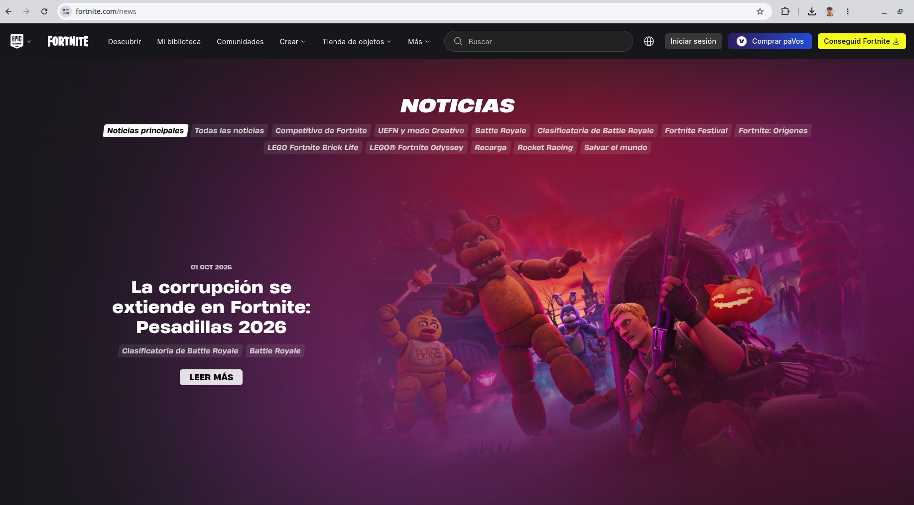
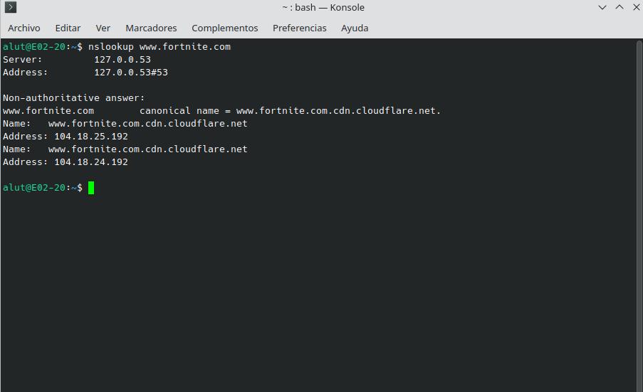
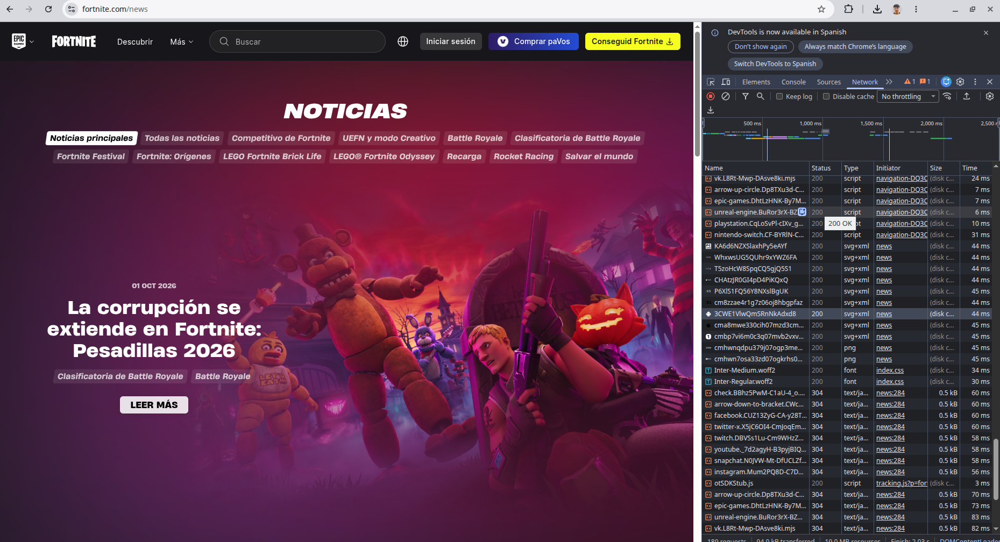
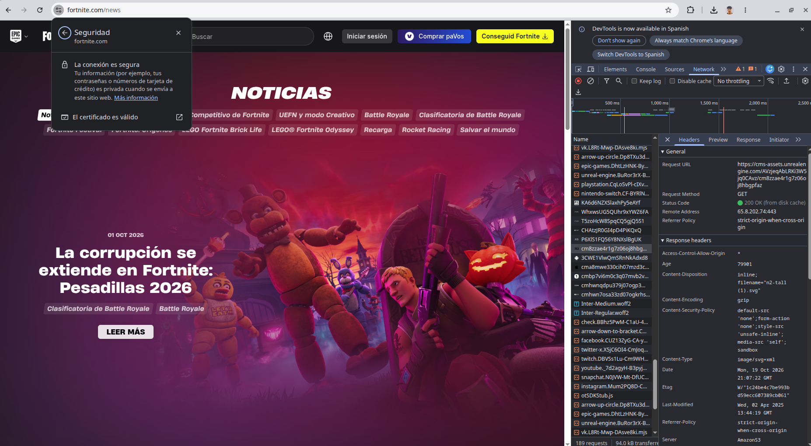
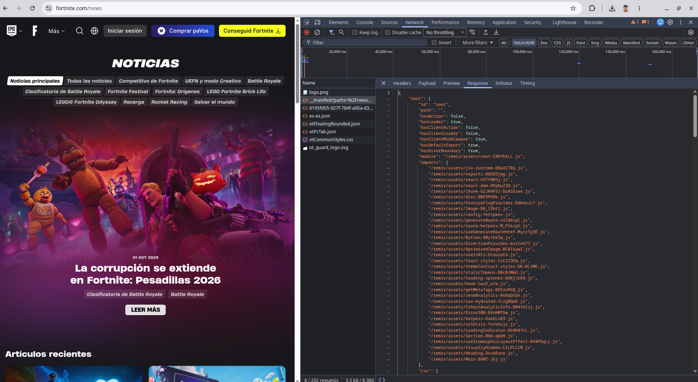

La web que he elegido
He elegido Fortnite porque es un juego que conozco de sobra y su página oficial de noticias viene muy bien para ver una ruta clara en la barra de direcciones, comprobar su certificado seguro y ver cómo carga datos dinámicos en segundo plano.
Glosario
| Término | Definición con mis palabras | Ejemplo en mi web |
|---|---|---|
| Cliente | Es el dispositivo y el navegador que usamos nosotros para conectarnos a internet, pedir una página web y verla en la pantalla. | Mi propio ordenador y el navegador desde el que entro para ver las noticias de Fortnite. |
| Servidor | Es un ordenador potente que está encendido todo el día conectado a la red para guardar información y dársela a otros equipos cuando se la piden. | Las máquinas en la nube que usa Epic Games para tener alojada la web de Fortnite y sus archivos. |
| Servidor web | Es el programa instalado dentro del servidor que se encarga de atender las visitas de los navegadores y enviarles los archivos de la página. | El software que recibe mi visita al entrar a www.fortnite.com y me devuelve la portada y las fotos de las noticias. |
| Apache | Es uno de los programas de servidor web gratuitos más conocidos y usados de internet para alojar páginas web. | En la web de Fortnite no se ve si usan Apache u otro parecido porque lo tapan por seguridad detrás de Amazon CloudFront, pero haría esa misma función. |
| URL | Es la dirección completa que escribimos arriba en el navegador para ir directamente a una página o archivo concreto de internet. | https://www.fortnite.com/news, que es la dirección entera para ir al apartado de noticias del juego. |
| Protocolo | Son las reglas que usan el navegador y el servidor para poder entenderse cuando se envían información por la red. | El https:// que sale justo al principio de la barra de direcciones en la web de Fortnite. |
| Dominio | Es el nombre fácil de recordar que tiene una página web para no tener que aprendernos de memoria los números de su dirección IP. | www.fortnite.com, que identifica la web oficial del juego. |
| Ruta | Es la parte de la dirección que va después del dominio (separada con barras) y que indica en qué apartado o carpeta de la web estamos. | /news, que nos lleva directamente a la sección de noticias dentro de la página de Fortnite. |
| Dirección IP | Es el número único que identifica a cada aparato o servidor conectado a internet, igual que si fuera un número de teléfono. | Las direcciones numéricas que devuelve la terminal cuando ejecutamos el comando nslookup www.fortnite.com. |
| DNS | Es como la agenda de teléfonos de internet: traduce el nombre del dominio que escribimos nosotros a la dirección IP real del servidor. | El sistema que nos traduce el nombre www.fortnite.com a sus direcciones IP reales para que el navegador sepa a dónde conectarse. |
| HTTP | Es el protocolo básico de toda la vida para pedir y enviar páginas web, pero manda los datos en texto plano sin ninguna protección. | Si intentamos entrar escribiendo http://www.fortnite.com, el servidor nos redirige enseguida a la versión con HTTPS para no navegar sin cifrado. |
| HTTPS | Es la versión segura de HTTP, que cifra la conexión con un certificado para que nadie pueda leer ni robar los datos que viajan entre el navegador y la web. | Se ve en el https:// de la dirección y al abrir los detalles de seguridad de la barra superior, donde pone que el certificado de la web es válido. |
| Puerto | Es como el número de puerta por la que entra y sale un servicio concreto dentro del servidor para no mezclarse con otros programas. | Como la web de Fortnite va por HTTPS, nuestro navegador se conecta automáticamente al puerto 443 del servidor aunque no se vea escrito en la URL. |
| Petición | Es el mensaje que envía el navegador al servidor cada vez que necesita que le mande el documento de la página, una imagen o un archivo de estilo. | En la pestaña Red (F12) se ven todas las peticiones (de tipo GET) que hace el navegador al cargar /news y las fotos de cada noticia. |
| Respuesta | Es la contestación que nos devuelve el servidor después de una petición, entregando el archivo pedido junto con el resultado de si todo ha ido bien. | El código HTML, las imágenes y los datos que nos manda de vuelta el servidor de Fortnite y que podemos inspeccionar en la pestaña Red. |
| Código de estado | Es un número de tres cifras con el que el servidor resume qué ha pasado con la petición (por ejemplo, 200 si todo fue bien o 404 si no existe). | El código 200 que aparece en la columna de estado de la pestaña Red (F12) cuando cargan bien la página de noticias y sus archivos. |
| Web estática | Es una página web fija que siempre muestra exactamente la misma información a todo el mundo y solo cambia si alguien edita el código a mano. | La web de Fortnite en conjunto no es estática, aunque páginas sueltas de texto legal como la política de privacidad casi funcionan como una fija. |
| Web dinámica | Es una web que genera o cambia su contenido automáticamente sacando los datos de una base de datos según lo que se publique o quién entre. | La sección /news de Fortnite es totalmente dinámica porque la lista de noticias y notas de parches se actualiza sola cada vez que sacan contenido nuevo. |
| PHP | Es un lenguaje de programación muy usado que trabaja dentro del servidor para fabricar páginas dinámicas y consultar bases de datos. | Fortnite usa tecnologías más modernas basadas en JavaScript en vez de PHP, pero haría ese mismo trabajo de preparar la web desde el lado del servidor. |
| Base de datos | Es el almacén donde una web guarda toda su información ordenada en tablas o colecciones para poder consultarla rápido cuando hace falta. | El sistema donde Epic Games tiene guardados todos los artículos de noticias, las imágenes de la tienda y las cuentas de los usuarios. |
| LAMP | Es un conjunto muy típico de cuatro herramientas (Linux, Apache, MySQL y PHP) que se instalan juntas para montar un servidor web completo. | Una web tan grande como Fortnite utiliza servidores en la nube más complejos que un LAMP tradicional, pero necesita igualmente esas cuatro piezas equivalentes. |
| JSON | Es un formato de texto muy ligero, escrito con llaves y parejas de clave-valor, que usan las webs actuales para intercambiar datos con el servidor. | Las respuestas que salen en la pestaña Red al filtrar por Fetch/XHR, donde la web de Fortnite recibe datos estructurados sin recargar toda la pantalla. |
| XML | Es un formato de texto más antiguo para guardar y transportar datos estructurados usando etiquetas parecidas a las del HTML. | Para cargar datos en vivo Fortnite prefiere usar JSON porque ocupa menos, aunque el mapa de la web para los buscadores (sitemap.xml) sí está hecho en XML. |
Evidencias

https://), el dominio (www.fortnite.com) y la ruta (/news) señalados.
nslookup www.fortnite.com en la terminal, donde el DNS nos devuelve las direcciones IP asociadas al dominio.

